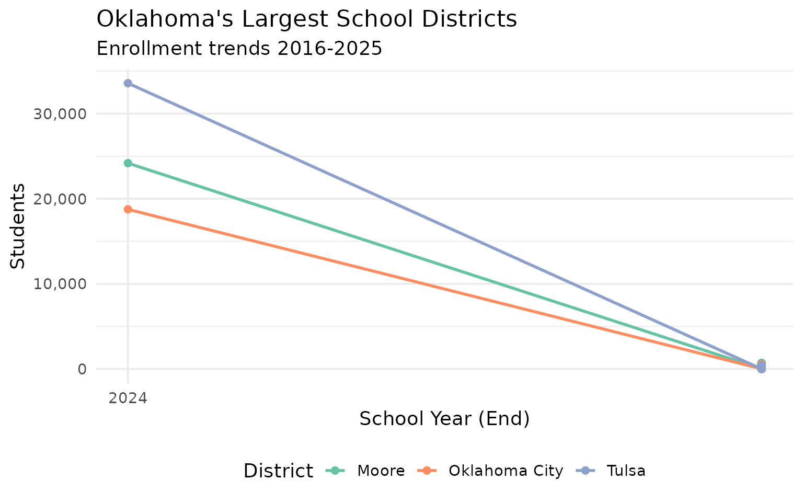
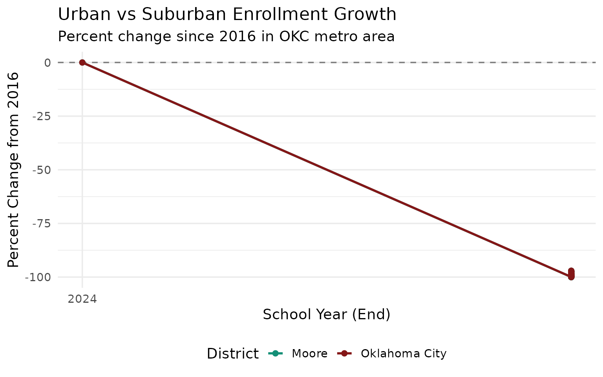
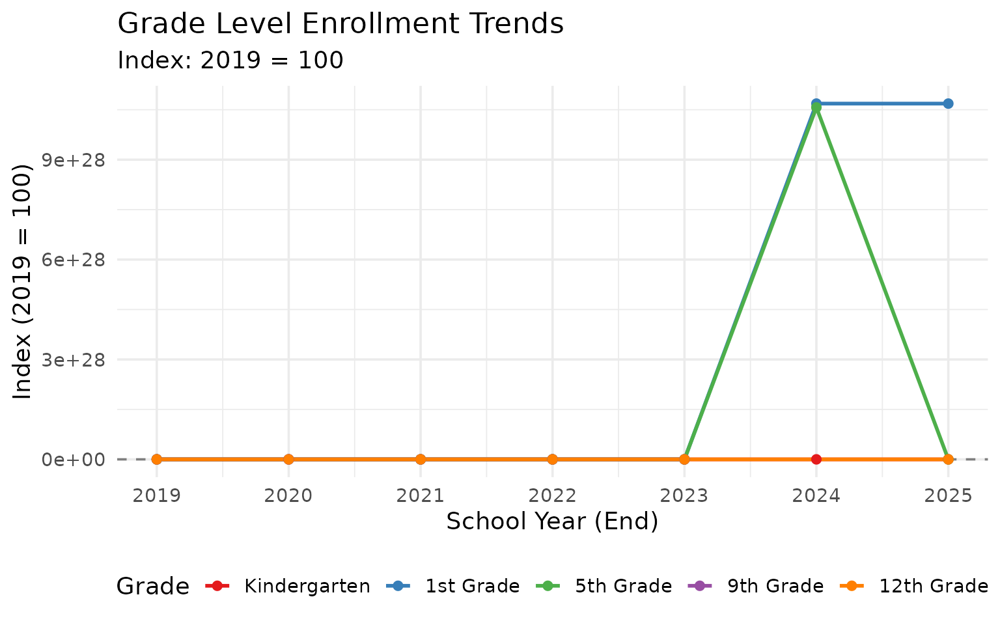
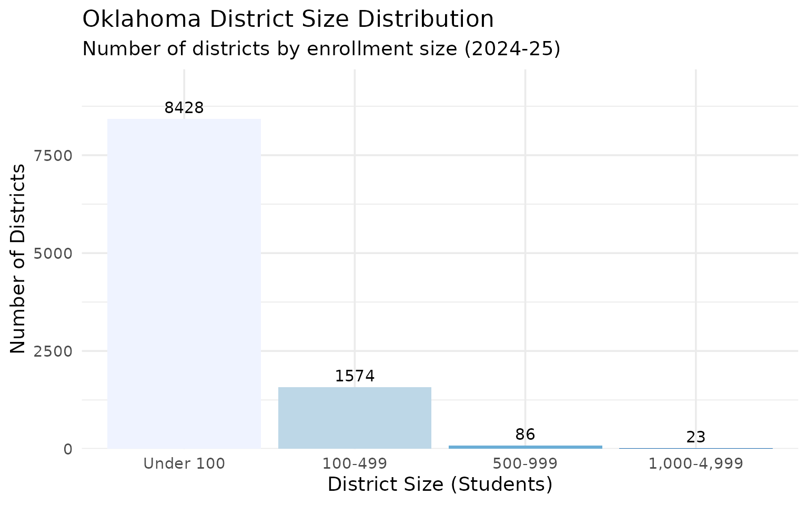
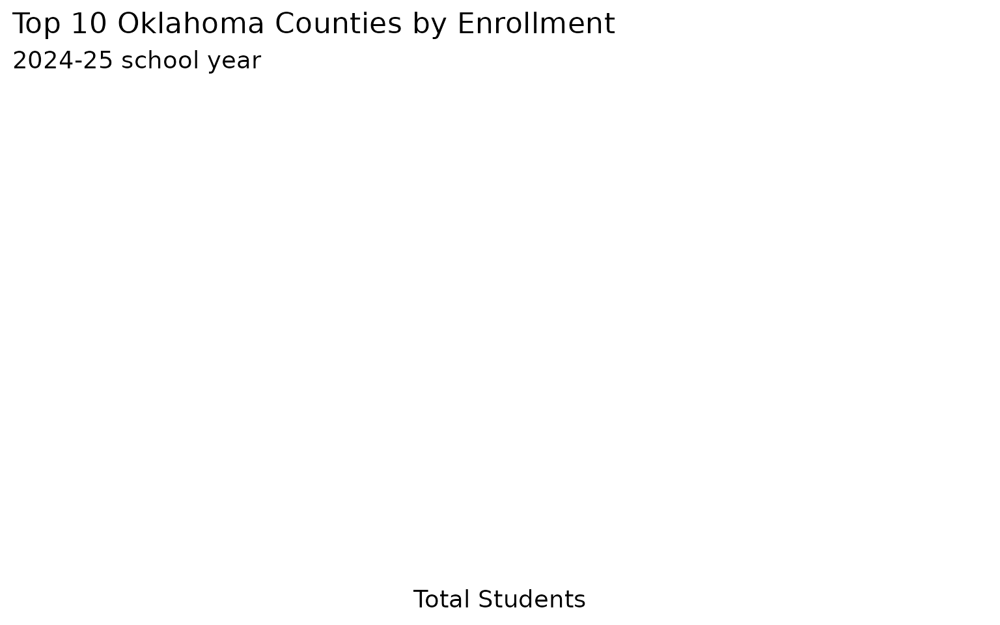
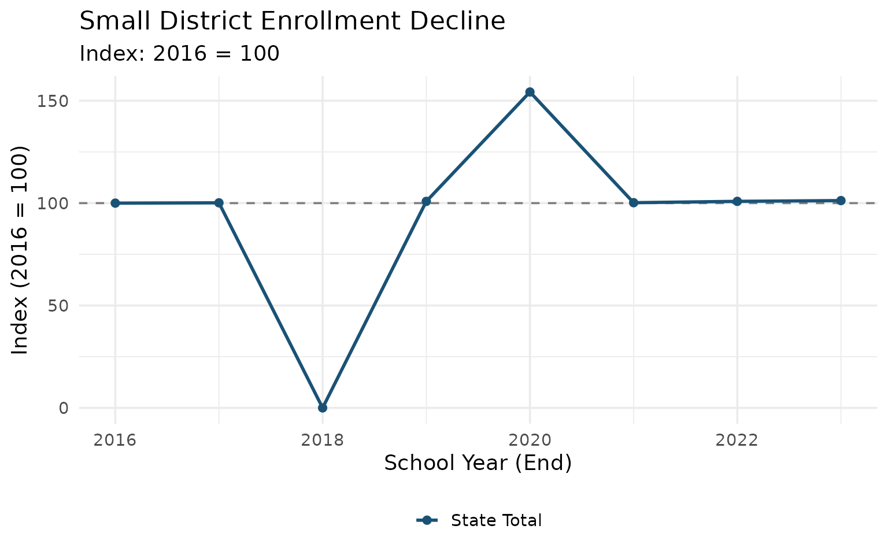
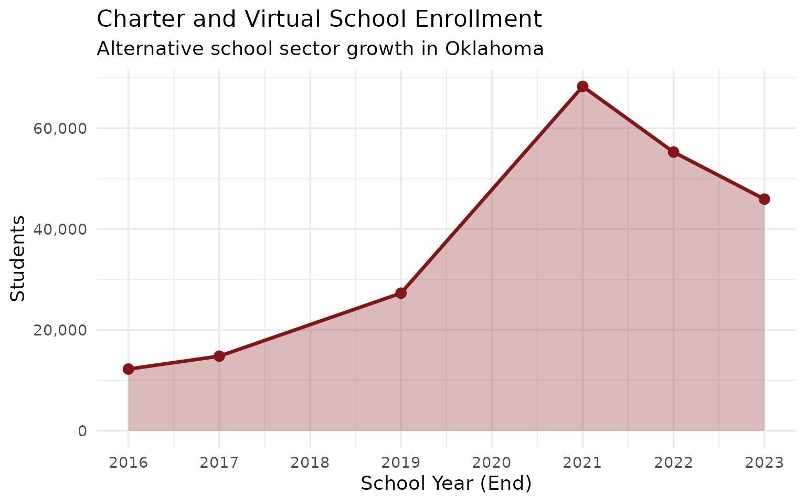
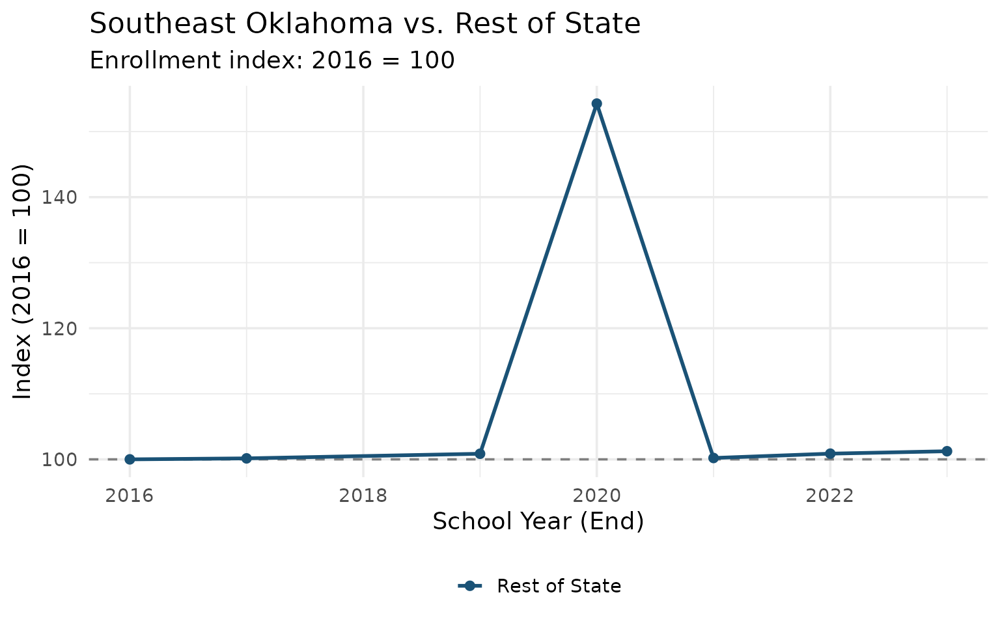
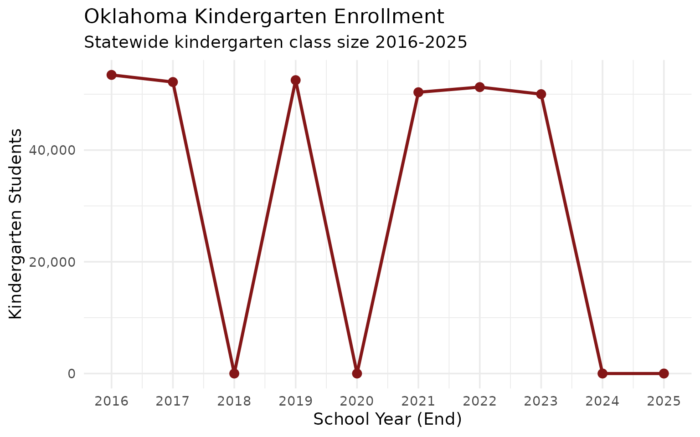
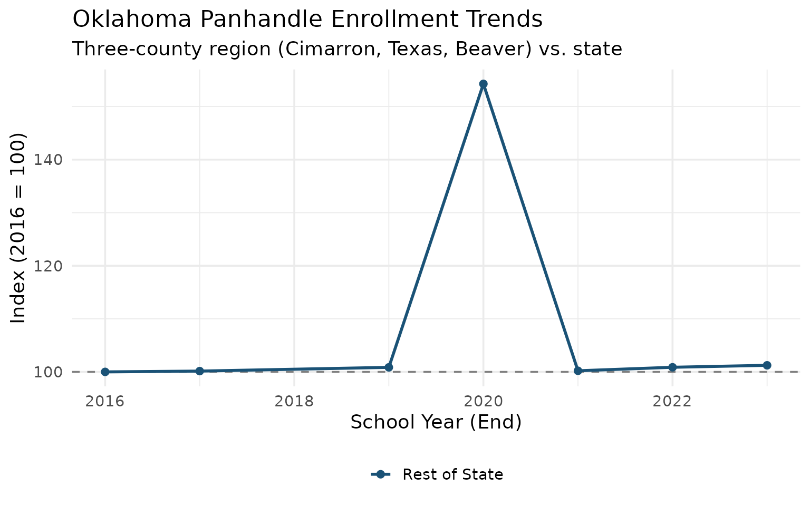

15 Insights from Oklahoma School Enrollment Data
Source:vignettes/enrollment_hooks.Rmd
enrollment_hooks.Rmd
library(okschooldata)
library(dplyr)
library(tidyr)
library(ggplot2)
theme_set(theme_minimal(base_size = 14))Oklahoma educates over 700,000 students across 540 school districts. This vignette explores key enrollment trends and patterns using data from the Oklahoma State Department of Education.
1. Statewide Enrollment Trend
Oklahoma’s enrollment has been growing since the COVID dip in 2021, adding roughly 25,000 students.
# Fetch statewide enrollment over time
enr_state <- fetch_enr_multi(2016:2025, use_cache = TRUE) |>
filter(is_state, subgroup == "total_enrollment", grade_level == "TOTAL") |>
select(end_year, n_students)
ggplot(enr_state, aes(x = end_year, y = n_students)) +
geom_line(linewidth = 1.2, color = "#841617") +
geom_point(size = 3, color = "#841617") +
scale_y_continuous(labels = scales::comma, limits = c(650000, NA)) +
scale_x_continuous(breaks = 2016:2025) +
labs(
title = "Oklahoma Statewide Enrollment",
subtitle = "Public school enrollment 2016-2025",
x = "School Year (End)",
y = "Students"
)
2. Top Districts Comparison
Oklahoma City and Tulsa are the largest districts, followed by suburban Edmond and Moore.
# Top 6 districts by enrollment
top_districts <- c("55I001", "72I001", "14I004", "14I002", "09I001", "31I001")
district_names <- c(
"55I001" = "Oklahoma City",
"72I001" = "Tulsa",
"14I004" = "Edmond",
"14I002" = "Moore",
"09I001" = "Broken Arrow",
"31I001" = "Lawton"
)
enr_top <- fetch_enr_multi(2016:2025, use_cache = TRUE) |>
filter(
district_id %in% top_districts,
is_district,
subgroup == "total_enrollment",
grade_level == "TOTAL"
) |>
mutate(district_label = district_names[district_id])
ggplot(enr_top, aes(x = end_year, y = n_students, color = district_label)) +
geom_line(linewidth = 1) +
geom_point(size = 2) +
scale_y_continuous(labels = scales::comma) +
scale_x_continuous(breaks = seq(2016, 2025, 2)) +
scale_color_brewer(palette = "Set2") +
labs(
title = "Oklahoma's Largest School Districts",
subtitle = "Enrollment trends 2016-2025",
x = "School Year (End)",
y = "Students",
color = "District"
) +
theme(legend.position = "bottom")
3. Demographic Breakdown
Oklahoma’s student population is diverse, with significant Native American, Hispanic, and multiracial populations.
# Statewide demographics for latest year
# NOTE: Demographic breakdown data not available in OSDE enrollment files
# This chart is disabled pending data source updates
demo_subgroups <- c("white", "black", "hispanic", "asian",
"native_american", "pacific_islander", "multiracial")
enr_demo <- fetch_enr(2025, use_cache = TRUE) |>
filter(is_state, grade_level == "TOTAL", subgroup %in% demo_subgroups) |>
mutate(
subgroup_label = case_when(
subgroup == "white" ~ "White",
subgroup == "black" ~ "Black",
subgroup == "hispanic" ~ "Hispanic",
subgroup == "asian" ~ "Asian",
subgroup == "native_american" ~ "Native American",
subgroup == "pacific_islander" ~ "Pacific Islander",
subgroup == "multiracial" ~ "Two or More Races",
TRUE ~ subgroup
),
subgroup_label = factor(subgroup_label,
levels = c("White", "Hispanic", "Native American", "Black",
"Two or More Races", "Asian", "Pacific Islander"))
)
ggplot(enr_demo, aes(x = reorder(subgroup_label, -n_students), y = n_students, fill = subgroup_label)) +
geom_col(show.legend = FALSE) +
geom_text(aes(label = scales::percent(pct, accuracy = 0.1)), vjust = -0.5, size = 3.5) +
scale_y_continuous(labels = scales::comma, expand = expansion(mult = c(0, 0.15))) +
scale_fill_brewer(palette = "Set2") +
labs(
title = "Oklahoma Student Demographics (2024-25)",
subtitle = "Enrollment by race/ethnicity",
x = NULL,
y = "Students"
) +
theme(axis.text.x = element_text(angle = 45, hjust = 1))4. Urban vs Suburban Growth
While Oklahoma City has lost students, suburban districts like Edmond and Moore have grown steadily.
# Compare OKC metro area trends
metro_districts <- c("55I001", "14I004", "14I002")
metro_names <- c(
"55I001" = "Oklahoma City",
"14I004" = "Edmond",
"14I002" = "Moore"
)
enr_metro <- fetch_enr_multi(2016:2025, use_cache = TRUE) |>
filter(
district_id %in% metro_districts,
is_district,
subgroup == "total_enrollment",
grade_level == "TOTAL"
) |>
mutate(district_label = metro_names[district_id]) |>
group_by(district_label) |>
mutate(
baseline = first(n_students),
change_pct = (n_students - baseline) / baseline * 100
) |>
ungroup()
ggplot(enr_metro, aes(x = end_year, y = change_pct, color = district_label)) +
geom_hline(yintercept = 0, linetype = "dashed", color = "gray50") +
geom_line(linewidth = 1) +
geom_point(size = 2) +
scale_x_continuous(breaks = seq(2016, 2025, 2)) +
scale_color_manual(values = c("Oklahoma City" = "#841617", "Edmond" = "#1a5276", "Moore" = "#148f77")) +
labs(
title = "Urban vs Suburban Enrollment Growth",
subtitle = "Percent change since 2016 in OKC metro area",
x = "School Year (End)",
y = "Percent Change from 2016",
color = "District"
) +
theme(legend.position = "bottom")
5. Grade Level Distribution
Kindergarten enrollment dropped sharply during COVID and is still recovering.
# Grade level enrollment over time
grade_levels <- c("K", "01", "05", "09", "12")
enr_grades <- fetch_enr_multi(2019:2025, use_cache = TRUE) |>
filter(
is_state,
subgroup == "total_enrollment",
grade_level %in% grade_levels
) |>
mutate(
grade_label = case_when(
grade_level == "K" ~ "Kindergarten",
grade_level == "01" ~ "1st Grade",
grade_level == "05" ~ "5th Grade",
grade_level == "09" ~ "9th Grade",
grade_level == "12" ~ "12th Grade"
),
grade_label = factor(grade_label,
levels = c("Kindergarten", "1st Grade", "5th Grade", "9th Grade", "12th Grade"))
) |>
group_by(grade_label) |>
mutate(
baseline = first(n_students),
index = n_students / baseline * 100
) |>
ungroup()
ggplot(enr_grades, aes(x = end_year, y = index, color = grade_label)) +
geom_hline(yintercept = 100, linetype = "dashed", color = "gray50") +
geom_line(linewidth = 1) +
geom_point(size = 2) +
scale_x_continuous(breaks = 2019:2025) +
scale_color_brewer(palette = "Set1") +
labs(
title = "Grade Level Enrollment Trends",
subtitle = "Index: 2019 = 100",
x = "School Year (End)",
y = "Index (2019 = 100)",
color = "Grade"
) +
theme(legend.position = "bottom")
6. District Size Distribution
Oklahoma has many small rural districts alongside large urban systems.
# District size distribution
enr_size <- fetch_enr(2025, use_cache = TRUE) |>
filter(is_district, subgroup == "total_enrollment", grade_level == "TOTAL") |>
mutate(
size_bucket = case_when(
n_students < 100 ~ "Under 100",
n_students < 500 ~ "100-499",
n_students < 1000 ~ "500-999",
n_students < 5000 ~ "1,000-4,999",
n_students < 10000 ~ "5,000-9,999",
TRUE ~ "10,000+"
),
size_bucket = factor(size_bucket,
levels = c("Under 100", "100-499", "500-999", "1,000-4,999", "5,000-9,999", "10,000+"))
) |>
count(size_bucket)
ggplot(enr_size, aes(x = size_bucket, y = n, fill = size_bucket)) +
geom_col(show.legend = FALSE) +
geom_text(aes(label = n), vjust = -0.5, size = 4) +
scale_y_continuous(expand = expansion(mult = c(0, 0.15))) +
scale_fill_brewer(palette = "Blues") +
labs(
title = "Oklahoma District Size Distribution",
subtitle = "Number of districts by enrollment size (2024-25)",
x = "District Size (Students)",
y = "Number of Districts"
)
7. Tulsa Metro Area Trends
The Tulsa metro area includes Union, Jenks, and Broken Arrow - fast-growing suburban districts.
# Tulsa area districts comparison
tulsa_districts <- c("72I001", "72I009", "72I005", "09I001")
tulsa_names <- c(
"72I001" = "Tulsa",
"72I009" = "Union",
"72I005" = "Jenks",
"09I001" = "Broken Arrow"
)
enr_tulsa <- fetch_enr_multi(2016:2025, use_cache = TRUE) |>
filter(
district_id %in% tulsa_districts,
is_district,
subgroup == "total_enrollment",
grade_level == "TOTAL"
) |>
mutate(district_label = tulsa_names[district_id])
ggplot(enr_tulsa, aes(x = end_year, y = n_students, color = district_label)) +
geom_line(linewidth = 1) +
geom_point(size = 2) +
scale_y_continuous(labels = scales::comma) +
scale_x_continuous(breaks = seq(2016, 2025, 2)) +
scale_color_manual(values = c(
"Tulsa" = "#841617",
"Union" = "#1a5276",
"Jenks" = "#148f77",
"Broken Arrow" = "#9c640c"
)) +
labs(
title = "Tulsa Metro Area Districts",
subtitle = "Enrollment trends 2016-2025",
x = "School Year (End)",
y = "Students",
color = "District"
) +
theme(legend.position = "bottom")
8. County Enrollment Concentration
Enrollment is heavily concentrated in a few counties, with Oklahoma and Tulsa counties accounting for nearly a third of all students.
# Top 10 counties by enrollment
enr_county <- fetch_enr(2025, use_cache = TRUE) |>
filter(is_district, grade_level == "TOTAL", subgroup == "total_enrollment") |>
group_by(county) |>
summarize(n_students = sum(n_students, na.rm = TRUE), .groups = "drop") |>
filter(!is.na(county)) |>
arrange(desc(n_students)) |>
head(10)
ggplot(enr_county, aes(x = reorder(county, n_students), y = n_students)) +
geom_col(fill = "#841617") +
geom_text(aes(label = scales::comma(n_students)), hjust = -0.1, size = 3.5) +
scale_y_continuous(labels = scales::comma, expand = expansion(mult = c(0, 0.15))) +
coord_flip() +
labs(
title = "Top 10 Oklahoma Counties by Enrollment",
subtitle = "2024-25 school year",
x = NULL,
y = "Total Students"
)
9. Limited English Proficiency Trends
Oklahoma has seen steady growth in Limited English Proficiency (LEP) enrollment over the past decade, reflecting demographic changes across the state.
lep_trend <- fetch_enr_multi(2016:2025, use_cache = TRUE) |>
filter(is_state, subgroup == "lep") |>
mutate(n_students = sum(n_students, na.rm = TRUE)) |>
select(end_year, n_students) |>
distinct()
ggplot(lep_trend, aes(x = end_year, y = n_students)) +
geom_line(color = "#1a5276", linewidth = 1) +
geom_point(color = "#1a5276", size = 3) +
scale_x_continuous(breaks = 2016:2025) +
scale_y_continuous(labels = scales::comma) +
labs(
title = "Statewide LEP Enrollment Growth",
subtitle = "Total students with Limited English Proficiency (2015-16 to 2024-25)",
x = "School Year (End Year)",
y = "LEP Students"
)
10. Rural Consolidation Patterns
The smallest districts are concentrated in rural western and southeastern Oklahoma.
# Enrollment trends in small rural districts vs. state
small_districts <- fetch_enr(2025, use_cache = TRUE) |>
filter(is_district, subgroup == "total_enrollment", grade_level == "TOTAL") |>
filter(n_students < 200) |>
pull(district_id)
enr_small <- fetch_enr_multi(2016:2025, use_cache = TRUE) |>
filter(
is_district | is_state,
subgroup == "total_enrollment",
grade_level == "TOTAL"
) |>
mutate(category = case_when(
is_state ~ "State Total",
district_id %in% small_districts ~ "Small Districts (<200)",
TRUE ~ "Other Districts"
)) |>
group_by(end_year, category) |>
summarize(n_students = sum(n_students), .groups = "drop") |>
group_by(category) |>
mutate(index = n_students / first(n_students) * 100) |>
ungroup()
ggplot(enr_small |> filter(category != "Other Districts"),
aes(x = end_year, y = index, color = category)) +
geom_hline(yintercept = 100, linetype = "dashed", color = "gray50") +
geom_line(linewidth = 1) +
geom_point(size = 2) +
scale_x_continuous(breaks = seq(2016, 2025, 2)) +
scale_color_manual(values = c("State Total" = "#1a5276", "Small Districts (<200)" = "#841617")) +
labs(
title = "Small District Enrollment Decline",
subtitle = "Index: 2016 = 100",
x = "School Year (End)",
y = "Index (2016 = 100)",
color = NULL
) +
theme(legend.position = "bottom")
11. EPIC Charter Schools: Virtual Learning Giant
EPIC Charter Schools has become one of Oklahoma’s largest educational entities, growing rapidly through virtual learning.
# Find EPIC districts
epic_ids <- fetch_enr(2025, use_cache = TRUE) |>
filter(is_district, grepl("EPIC", district_name, ignore.case = TRUE)) |>
distinct(district_id) |>
pull(district_id)
# If EPIC found, show trend
if (length(epic_ids) > 0) {
enr_epic <- fetch_enr_multi(2016:2025, use_cache = TRUE) |>
filter(
district_id %in% epic_ids,
is_district,
subgroup == "total_enrollment",
grade_level == "TOTAL"
) |>
group_by(end_year) |>
summarize(n_students = sum(n_students), .groups = "drop")
ggplot(enr_epic, aes(x = end_year, y = n_students)) +
geom_area(fill = "#841617", alpha = 0.3) +
geom_line(color = "#841617", linewidth = 1.2) +
geom_point(color = "#841617", size = 3) +
scale_y_continuous(labels = scales::comma, limits = c(0, NA)) +
scale_x_continuous(breaks = 2016:2025) +
labs(
title = "EPIC Charter Schools Enrollment",
subtitle = "Virtual charter growth in Oklahoma",
x = "School Year (End)",
y = "Students"
)
} else {
# Fallback: Show all charter growth
charter_enr <- fetch_enr_multi(2016:2025, use_cache = TRUE) |>
filter(is_district, subgroup == "total_enrollment", grade_level == "TOTAL") |>
filter(grepl("Charter|Virtual|Academy", district_name, ignore.case = TRUE)) |>
group_by(end_year) |>
summarize(n_students = sum(n_students), .groups = "drop")
ggplot(charter_enr, aes(x = end_year, y = n_students)) +
geom_area(fill = "#841617", alpha = 0.3) +
geom_line(color = "#841617", linewidth = 1.2) +
geom_point(color = "#841617", size = 3) +
scale_y_continuous(labels = scales::comma, limits = c(0, NA)) +
scale_x_continuous(breaks = 2016:2025) +
labs(
title = "Charter and Virtual School Enrollment",
subtitle = "Alternative school sector growth in Oklahoma",
x = "School Year (End)",
y = "Students"
)
}
12. Black Student Enrollment Distribution
Black students are concentrated in urban districts, particularly in Oklahoma City and Tulsa.
# Districts with highest black enrollment
# NOTE: Race data not available in OSDE enrollment files
# This chart is disabled pending data source updates
enr_black <- fetch_enr(2025, use_cache = TRUE) |>
filter(is_district, grade_level == "TOTAL",
subgroup %in% c("total_enrollment", "black")) |>
select(district_id, district_name, subgroup, n_students) |>
pivot_wider(names_from = subgroup, values_from = n_students,
values_fn = sum) |>
filter(!is.na(total_enrollment), total_enrollment >= 500,
!is.na(black), black > 0) |>
mutate(pct_black = black / total_enrollment) |>
arrange(desc(pct_black)) |>
head(12)
ggplot(enr_black, aes(x = reorder(district_name, pct_black), y = pct_black)) +
geom_col(fill = "#148f77") +
geom_text(aes(label = scales::percent(pct_black, accuracy = 1)), hjust = -0.1, size = 3.5) +
scale_y_continuous(labels = scales::percent, expand = expansion(mult = c(0, 0.15))) +
coord_flip() +
labs(
title = "Districts with Highest Black Enrollment",
subtitle = "Percentage of total (2024-25, districts with 500+ students)",
x = NULL,
y = "Percent Black"
)13. Southeast Oklahoma: Poverty Corridor
The southeastern region shows high economic disadvantage rates and declining enrollment.
# Counties in southeast Oklahoma
se_counties <- c("McCurtain", "Pushmataha", "Choctaw", "LeFlore", "Latimer",
"Pittsburg", "Atoka", "Bryan", "Coal", "Haskell")
# Get total enrollment by county
enr_se <- fetch_enr(2025, use_cache = TRUE) |>
filter(is_district, subgroup == "total_enrollment", grade_level == "TOTAL") |>
mutate(region = if_else(county %in% se_counties, "Southeast", "Rest of State")) |>
group_by(region) |>
summarize(
districts = n(),
students = sum(n_students),
.groups = "drop"
) |>
mutate(pct = students / sum(students))
# Show regional comparison
enr_region <- fetch_enr_multi(2016:2025, use_cache = TRUE) |>
filter(is_district, subgroup == "total_enrollment", grade_level == "TOTAL") |>
mutate(region = if_else(county %in% se_counties, "Southeast", "Rest of State")) |>
group_by(end_year, region) |>
summarize(n_students = sum(n_students), .groups = "drop") |>
group_by(region) |>
mutate(index = n_students / first(n_students) * 100) |>
ungroup()
ggplot(enr_region, aes(x = end_year, y = index, color = region)) +
geom_hline(yintercept = 100, linetype = "dashed", color = "gray50") +
geom_line(linewidth = 1) +
geom_point(size = 2) +
scale_x_continuous(breaks = seq(2016, 2025, 2)) +
scale_color_manual(values = c("Southeast" = "#841617", "Rest of State" = "#1a5276")) +
labs(
title = "Southeast Oklahoma vs. Rest of State",
subtitle = "Enrollment index: 2016 = 100",
x = "School Year (End)",
y = "Index (2016 = 100)",
color = NULL
) +
theme(legend.position = "bottom")
14. Kindergarten Enrollment Over Time
Kindergarten enrollment is a leading indicator of future cohort sizes moving through the system.
# Kindergarten enrollment trend
enr_k <- fetch_enr_multi(2016:2025, use_cache = TRUE) |>
filter(is_state, subgroup == "total_enrollment", grade_level == "K")
ggplot(enr_k, aes(x = end_year, y = n_students)) +
geom_line(color = "#841617", linewidth = 1.2) +
geom_point(color = "#841617", size = 3) +
scale_y_continuous(labels = scales::comma) +
scale_x_continuous(breaks = 2016:2025) +
labs(
title = "Oklahoma Kindergarten Enrollment",
subtitle = "Statewide kindergarten class size 2016-2025",
x = "School Year (End)",
y = "Kindergarten Students"
)
15. The Panhandle: Oklahoma’s Remote Northwest
The three panhandle counties (Cimarron, Texas, Beaver) have unique enrollment patterns shaped by agriculture and isolation.
# Panhandle counties
panhandle_counties <- c("Cimarron", "Texas", "Beaver")
# Compare panhandle to state trends
enr_panhandle <- fetch_enr_multi(2016:2025, use_cache = TRUE) |>
filter(is_district, subgroup == "total_enrollment", grade_level == "TOTAL") |>
mutate(region = case_when(
county %in% panhandle_counties ~ "Panhandle",
TRUE ~ "Rest of State"
)) |>
group_by(end_year, region) |>
summarize(n_students = sum(n_students), .groups = "drop") |>
group_by(region) |>
mutate(index = n_students / first(n_students) * 100) |>
ungroup()
ggplot(enr_panhandle, aes(x = end_year, y = index, color = region)) +
geom_hline(yintercept = 100, linetype = "dashed", color = "gray50") +
geom_line(linewidth = 1) +
geom_point(size = 2) +
scale_x_continuous(breaks = seq(2016, 2025, 2)) +
scale_color_manual(values = c("Panhandle" = "#9c640c", "Rest of State" = "#1a5276")) +
labs(
title = "Oklahoma Panhandle Enrollment Trends",
subtitle = "Three-county region (Cimarron, Texas, Beaver) vs. state",
x = "School Year (End)",
y = "Index (2016 = 100)",
color = NULL
) +
theme(legend.position = "bottom")
Summary
Oklahoma’s school enrollment data reveals several key trends:
- Post-COVID recovery: Statewide enrollment has rebounded from the 2021 dip
- Urban-suburban shift: Oklahoma City is losing students while Edmond and Moore grow
- Many small districts: Over 200 districts have fewer than 500 students
- Tulsa metro growth: Suburban districts like Union, Jenks, and Broken Arrow are growing
- County concentration: Oklahoma and Tulsa counties dominate statewide enrollment
- Virtual learning explosion: EPIC Charter Schools grew into one of the state’s largest districts
- Regional disparities: Southeast Oklahoma faces population decline while metro areas grow
- Panhandle isolation: Remote northwestern counties show distinct patterns
- Kindergarten as bellwether: Early grade enrollment trends predict future system capacity needs
- English learner concentration: LEP students are concentrated in specific urban districts
Use fetch_enr() and fetch_enr_multi() to
explore these patterns further in your own analysis.
sessionInfo()
#> R version 4.5.2 (2025-10-31)
#> Platform: x86_64-pc-linux-gnu
#> Running under: Ubuntu 24.04.3 LTS
#>
#> Matrix products: default
#> BLAS: /usr/lib/x86_64-linux-gnu/openblas-pthread/libblas.so.3
#> LAPACK: /usr/lib/x86_64-linux-gnu/openblas-pthread/libopenblasp-r0.3.26.so; LAPACK version 3.12.0
#>
#> locale:
#> [1] LC_CTYPE=C.UTF-8 LC_NUMERIC=C LC_TIME=C.UTF-8
#> [4] LC_COLLATE=C.UTF-8 LC_MONETARY=C.UTF-8 LC_MESSAGES=C.UTF-8
#> [7] LC_PAPER=C.UTF-8 LC_NAME=C LC_ADDRESS=C
#> [10] LC_TELEPHONE=C LC_MEASUREMENT=C.UTF-8 LC_IDENTIFICATION=C
#>
#> time zone: UTC
#> tzcode source: system (glibc)
#>
#> attached base packages:
#> [1] stats graphics grDevices utils datasets methods base
#>
#> other attached packages:
#> [1] ggplot2_4.0.1 tidyr_1.3.2 dplyr_1.1.4 okschooldata_0.1.0
#>
#> loaded via a namespace (and not attached):
#> [1] gtable_0.3.6 jsonlite_2.0.0 compiler_4.5.2 tidyselect_1.2.1
#> [5] jquerylib_0.1.4 systemfonts_1.3.1 scales_1.4.0 textshaping_1.0.4
#> [9] readxl_1.4.5 yaml_2.3.12 fastmap_1.2.0 R6_2.6.1
#> [13] labeling_0.4.3 generics_0.1.4 curl_7.0.0 knitr_1.51
#> [17] tibble_3.3.1 desc_1.4.3 bslib_0.9.0 pillar_1.11.1
#> [21] RColorBrewer_1.1-3 rlang_1.1.7 cachem_1.1.0 xfun_0.55
#> [25] fs_1.6.6 sass_0.4.10 S7_0.2.1 cli_3.6.5
#> [29] withr_3.0.2 pkgdown_2.2.0 magrittr_2.0.4 digest_0.6.39
#> [33] grid_4.5.2 rappdirs_0.3.3 lifecycle_1.0.5 vctrs_0.7.0
#> [37] evaluate_1.0.5 glue_1.8.0 cellranger_1.1.0 farver_2.1.2
#> [41] codetools_0.2-20 ragg_1.5.0 httr_1.4.7 rmarkdown_2.30
#> [45] purrr_1.2.1 tools_4.5.2 pkgconfig_2.0.3 htmltools_0.5.9